YOU CAN'T BE WHAT YOU CAN'T SEE
het beeld van de vrouw in de huidige mediacultuur
Scriptie door Alice Mulder
begin met lezenInleiding
Dagelijks worden we blootgesteld aan duizenden beelden, geluiden, artikelen en meningen. We krijgen enorm veel informatie binnen, die we vaak klakkeloos overnemen en accepteren. De manier waarop die informatie naar ons wordt gestuurd, via internet, de televisie of de radio, is niet per se zo objectief als we denken, en wat je ziet het heeft meer effect dan we denken. Persoonlijk val ik erover hoe vrouwen vaak worden neergezet op televisie of in andere media. De domme blondjes, mooie bimbo’s of toegewijde huisvrouwen: de vrouw die ik ben, zie ik bijna niet, laat staan dat er goede inspiratiebronnen te zien zijn. Als ik RTL5 moet geloven, zou ik mezelf moeten vergelijken met pornoster Bobbi Eden en op SBS moeten ze überhaupt nog ontdekken wat een vrouw is in ’Leer mij Vrouwen Kennen’. Ik word er moe van dat er speciale ’Ladies Nights’ georganiseerd moeten worden om vrouwelijke deskundigen aan tafel te krijgen bij programma’s als De Wereld Draait Door. Ik heb het idee dat hierdoor een verkeerd beeld ontstaat van vrouwen, waarbij niet elke mediagebruiker zal beseffen dat hij/zij een eenzijdig beeld voorgeschoteld krijgt.
Zo heeft internationaal onderzoek in 20051 uitgewezen dat de man-/vrouw-verdeling in de media 80 om 20 procent is2. Omdat media als een spiegel van de samenleving gezien kunnen worden, waarom is de vrouw dan zo weinig in beeld? En hoe groot is de invloed van het beeld dat we wél zien? Met dat als aanleiding, probeer ik daarom de volgende vraag in deze scriptie te onderzoeken:
In hoeverre wordt de rol van de vrouw bepaald door de media en waarom is dit een probleem?
Dit doe ik in het eerste deel van deze scriptie aan de hand van subvragen, waarbij ik ook bekijk hoe de rol van vrouwen door de geschiedenis heen is ontstaan en hoe de termen ’gender’ en ’sekse’ in deze geslachtsidentiteit belangrijk zijn om te benoemen. Hierna zal ik de rol van de media onder de loep nemen en de invloed hiervan in kaart brengen, en hoe vrouwen hierin gerepresenteerd worden. In deel twee zal ik op een persoonlijkere manier dit onderwerp benaderen door mijn frustratie over de reactie van vrouwen op dit onderwerp te bekijken, want dit viel mij bij het schrijven van deze scriptie ietwat tegen.
Hoofdstuk 1
Media zijn een vorm van massacommunicatie waar zo veel mogelijk mensen mee worden bereikt. Met het medium wordt de boodschap overgebracht, dat kan gaan via televisie, radio, etc.
Dit begon in de 15e eeuw grotere vormen aan te nemen door de uitvinding van de boekdrukkunst en werd in de 18e eeuw nog beter toegankelijk door de opkomst van kranten. Andere voorbeelden van massamedia zijn de dorpsomroeper, het pamflet, en later radio en televisie. Journaals in de bioscoop en later dagelijks op televisie zorgden voor een algemenere bewustwording van het nieuws van dichtbij en wereldwijd. De laatste jaren, door de opkomst van internet en smartphones, weten we binnen enkele seconden al of er in Irak een bom is ontploft of verderop in de stad een brand woedt.
In 2012 bleek televisie kijken de grootste vorm van mediagebruik3: hier besteden we 2,5 uur per dag aan op een totaal van 7 uur mediagebruik per dag. Hierna zijn internet met 99 minuten per dag en radio luisteren met 92 minuten minder tijdrovend, maar alsnog invloedrijk op de informatie die we tot ons krijgen. Deze cijfers gaan over de leeftijdsgroep 20–65 jaar:
- Televisie: 145 min
- Radio: 92 min
- Internet: 33 min
- Social media: 24 min
- Krant: 12 min
- Online video: 4 min
- Tijdschrift: 3 min
Met de toename van het gebruik van mobiel internet en de opkomst van sociale media, is het delen van informatie nog sneller geworden en nog meer gaan overheersen in de samenleving. Plaatst een vriendin van je op maandag een filmpje van een grappige kat, de volgende dag zie je dat filmpje ook op de Facebook-wall van anderen voorbij komen en is het filmpje opeens 5.000 keer geliket. Het filmpje gaat viral en zodra het écht leuk, schokkend of grappig wordt gevonden, wordt het soms zelfs overgenomen door televisieprogramma’s. Helaas gebeurt het hierdoor soms ook dat er ’nep nieuws’ gepromoot wordt, waar later dan op teruggekomen moet worden om het te rectificeren. De grens tussen echt en nep vervaagt, omdat we steeds meer zélf de journalist worden en elke like weer een kick geeft. Liever veel aandacht online, dan dat je per se een filmpje maakt dat helemaal klopt of juiste informatie geeft. Men heeft veel over voor die beruchte ’five minutes of fame’.
In het onderzoek in deze scriptie zal ik me toeleggen op televisie als grootste, meest toegankelijke bron van informatie voor de meeste mensen in de westerse wereld die ik onderzoek. Ik denk dat televisie als een betrouwbaardere bron wordt gezien dan internet/sociale media, waar het vooral gaat om losse persoontjes die iets vinden en doen en we minder het idee hebben dat alles wat er op internet te vinden is, waar is. Televisie is al een ouder medium waarvan we eerder aannemen dat het een spiegel is van onze maatschappij en dat dat dus waar is4. Juist hierin zit het probleem dat ik verder in deze scriptie zal onderzoeken.
Hoofdstuk 2.1
“Je komt niet ter wereld als vrouw, je wordt vrouw” Simone de Beauvoir5
In de omschrijving ’wat is een vrouw’ en de tegenovergestelde vraag ’wat is een man’ is het belangrijk om deze begrippen uit te leggen aan de hand van gender en sekse.
Sekse is het biologische, aangeboren verschil tussen mannen en vrouwen. Heb je een XY-chromosoom en een piemel? Dan ben je kort gezegd een man. Met XX-chromosomen en een vagina ben je een vrouw, maar zo simpel is het verschil tussen man en vrouw natuurlijk niet6.
Gender is daarentegen juist de sociaal gecreëerde status van een geslacht, waarbij de tijd en context in grote mate bepalen hoe die status eruit ziet. Zo zijn de stereotype eigenschappen van mannen en vrouwen breed bekend: mannen zijn zelfstandig, machtig, sterk en tonen weinig emotie; vrouwen daarentegen leven voor anderen, zorgen graag (en zijn daar ’goed’ in), zijn emotioneel en communicatief vaardig. Deze eigenschappen worden dan ook onbewust al verwacht bij deze twee seksen: de vrouw krijgt de meeste zorg over de kinderen, en als er iets is, kijkt men meteen naar de moeder. Als er verhuisd of geklust moet worden of er is een apparaat kapot, dan kijkt men de man lief aan.
Een boeiend voorbeeld over hoe we deze eigenschappen onbewust toedichten aan het geslacht, is een experiment waarbij wordt geluisterd naar het gehuil van baby’s. Als eerste wordt naar het gehuil van baby David geluisterd, en studenten moeten bepalen welke emotie deze baby voelt. ’Boos’ is meestal de conclusie. Daarna laat de professor een tweede baby horen, baby Dana. Haar gehuil wordt als verdrietig bestempeld, en hiermee wordt iets duidelijk.
De twee verschillende geluidsfragmenten waren er namelijk in feite maar één, en wat je hebt gehoord is je eigen onderbewuste die de vooroordelen tussen de geslachten bevestigt. Op universiteiten wordt dit experiment vaak gebruikt als eyeopener wat betreft ons denken in stereotypen7.
Deze stereotypen blijven ons hele leven bestaan en aan de hand hiervan wordt er in de samenleving een hiërarchie gecreëerd waarbij typische ’mannenberoepen’8 en ’vrouwenberoepen’ ontstaan. Vaak worden de eerste hoger gewaardeerd en beloond qua salaris9, en bijvoorbeeld in wetenschappelijk onderzoek worden publicaties geschreven door mannen hoger gewaardeerd dan die van vrouwen, het zogenaamde Matilda-effect1011. In het bedrijfsleven staan voornamelijk mannen aan het hoofd, en zolang deze elkaar steeds blijven benoemen tot medebestuurder, komt er geen vrouw tussen12, ook al is bewezen dat meer vrouwen aan de top in sommige gevallen betere effecten oplevert1314. Een ander woord voor deze verschillen in aanzien is genderstratificatie, oftwel historisch gegroeide genderconstructies, waarbij (in de praktijk) onder andere de dominante positie van de man ten opzichte van de vrouw bedoeld wordt.


Hoofdstuk 2.2
Nu duidelijk is wat het verschil is tussen sekse en gender, is het interessant om te kijken naar hoe de stereotype beelden van de vrouw geleidelijk is ontstaan in onze westerse cultuur (hiermee bedoel ik in het geval van mijn onderzoek Noord-Amerika en Europa) en hoe de rol van de vrouw steeds meer aan het veranderen is, of hoe daar in ieder geval pogingen toe ondernomen worden.
In de oertijd was de man op pad om te jagen en de vrouw bleef bij hun kroost om ze te verzorgen en te beschermen. Klinkt bekend, maar klopt dit beeld van de rolverdeling bij de eerste mensen wel? Geschiedenisboeken staan er vol mee, maar dit denkbeeld is verre van waar. In de tijd waarin de oermens rondtrok en het leven vol gevaren zat, was het wel degelijk waar dat mannen en vrouwen redelijk dezelfde taken en verantwoordelijkheden hadden. Dit is alleen slecht waar te nemen in opgravingen, dus bewijs hiervoor is lastig te vinden. Maar met logisch beredeneren is er dus óók geen bewijs dat de vrouw in deze periode al een duidelijke gender-rol van verzorgende moeder had. Pas toen de mens zich ging vastleggen op één plaats en men besefte dat een kind maar één vader had (dit was hiervoor niet echt duidelijk blijkbaar), kreeg men gevoel voor bezit. Het wonen op één gebied zorgde tevens voor een gevoel dat het andere bezit, de vrouw, ook beter in bedwang gehouden kon worden, en zo ontstonden de eerste tekenen van een verschil in man/vrouw-machtsverhoudingen.
Als we terug gaan naar een ander moment in de geschiedenis, of het nou echt gebeurd is of niet, dan vinden we onder andere het volgende over vrouwen in de Bijbel:
“Het was niet goed dat de mens alleen was, dus gingen God en Adam op zoek naar een geschikte partner. Toen er onder de dieren geen goede tegenpartij te vinden was, maakte God een vrouw uit een rib van Adam. Toen Adam zijn vrouw zag, riep hij (vers 23): ‘"Dit is nu eindelijk been van mijn gebeente en vlees van mijn vlees; deze zal „mannin” heten, omdat zij uit de man genomen is.”’ (Genesis 2:18-25)
De Bijbel is kort en krachtig: de vrouw, Eva, is een mannin, gemaakt uit de man en gecreëerd zodat Adam niet meer alleen was. In andere delen van de Bijbel valt te lezen:
Want eerst is Adam geformeerd, en daarna Eva.
1 Timoteüs 2:13
Want de man is niet uit de vrouw, maar de vrouw uit de man.
1 Korinthe 11:8 15
Eva kwam dus ná Adam, wat haar als je het heel rechtlijnig bekijkt, een ondergeschikte rol gaf als ’tweede mens’ op de aarde. De kerk heeft dit de hele Middeleeuwen volgehouden als zijnde de rechtvaardiging van onderdrukking van vrouwen.
Zo kon de kerk in de 15e eeuw, mede dankzij de grote ongeletterdheid onder het ’normale’ volk, de onderdrukking van de vrouw rechtvaardigen aan de hand van de Bijbel. Ook deden hogere en machtige kerkvaders heftige uitspraken die klakkeloos werden overgenomen. Abt Odo van Cluny (ca. 878 – 942) waarschuwde bijvoorbeeld: “Een vrouw omhelzen is net hetzelfde als het omhelzen van een zak stront.”16 En kerkvader Albertus Magnus van Keulen (ca. 1200-1280) zei: “Voor een vrouw moet men zich hoeden als voor een giftige slang.” Door dit soort uitspraken was de positie van de vrouw in de Middeleeuwen niet sterk en werd de vrouw onderdrukt en zwart gemaakt van alles wat fout ging in de maatschappij, bijvoorbeeld door veroordeling voor hekserij.
Eerste Feministische Golf
Het eerste echte invloedrijke moment dat vrouwen van zich lieten horen en opkwamen voor hun rechten was een flinke tijd later, vanaf 1870, tijdens de Eerste Feministische Golf. In Engeland gingen vrouwen onder de naam suffragettes (suffrage betekent stemrecht) de straat op17. Hierbij ging het de vrouwen vooral om het verkrijgen van vrouwenkiesrecht en het recht tot toegang tot universitair onderwijs, iets dat tot die tijd heel moeilijk was. De Eerste Feministische Golf duurde tot ongeveer 1920 en bereikte het hoogtepunt rond 1900, toen er in de maatschappij veel veranderde.
Als we kijken naar hoe deze eerste beweging zich in Nederland manifesteerde, is de naam Aletta Jacobs erg belangrijk. Aletta, de eerste vrouwelijke huisarts, afgestudeerd aan de Rijksuniversiteit Groningen in 187918, pleitte in 1883 al voor het vrouwenkiesrecht en wilde zich toen verkiesbaar stellen. Ondanks dat zij aan alle wettelijke bepalingen en belastingverplichtingen voldeed, werd haar verzoek zelfs door de Hoge Raad geweigerd19. De samenleving was nog niet klaar voor een dergelijke verandering, want de traditionele denkbeelden over de rol van de vrouw werden nog hardnekkig in stand gehouden door onder andere de kerk. Maar Aletta’s moedige poging om dit te veranderen had uiteindelijk wel effect, want in 1917 konden vrouwen tot volksvertegenwoordiger worden gekozen en in 1919 kregen alle Nederlandse vrouwen boven de 23 jaar actief kiesrecht, waarmee ze mochten stemmen. Suze Groeneweg was in 1919 het eerste vrouwelijke lid van de Tweede Kamer.

Vrouwenprotest in Amsterdam, 15 februari 1914
Tweede Feministische Golf
In de jaren 60 kwam de Tweede Feministische Golf op, een heropleving van het emancipatiedebat waarbij de nadruk lag op het recht op betaald werk en later ook op de zelfstandigheid van de vrouw en het zijn van de baas in eigen buik. Ook andere onderwerpen zoals het uitbannen van vrouwenmishandeling, de herverdeling van zorgverantwoordelijkheden/huishoudelijke taken en het opheffen van de eenzijdigheid van de weergave in media, waaronder pornografie waren (en zijn!) belangrijke punten.
Belangrijk, vooral in de Verenigde Staten, was het boek The feminine mystique van Betty Friedan (1963), dat de frustraties van de vrouw in haar vastgeroeste ideaal als huismoeder aan het licht bracht. Ze stimuleerde hiermee de beweging om zich los te maken van het huisvrouwenbestaan en hun eigen identiteit te ontwikkelen. De Europese tegenhanger van dit boek was La deuxième Sexe van Simone de Beauvoir (1948).
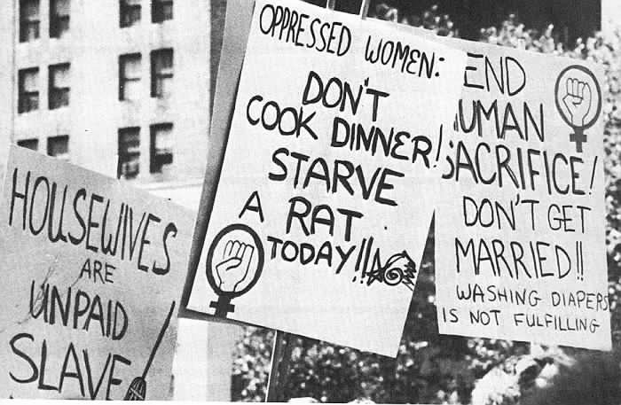Protest in New York, 1970
De feministische golven zijn hierna niet opgehouden met bestaan. Waar Madonna in haar video’s expliciet op seksuele vrijheid en de vrouwelijke macht doelde (zie o.a. de videoclip voor ’Justify My Love’ (1993) en ’Erotica’ (1992), riepen de Spice Girls in de jaren 90 overal waar ze konden op tot ’Girl Power!’
Derde, vierde, vijfde feministische golf?
Of er op dit moment een trend gaande is in een nieuwe feministische golf onderzoekt schrijfster Loes Reijmer van de Volkskrant in het artikel ’Koketteren’20. Ze kijkt hierbij vooral naar popartiesten, die in onze huidige tijd de rol bekleden van moderne politici en opiniemakers, die benadrukken hoe belangrijk vrouwelijke zelfstandigheid is. Zo geeft zangeres Beyoncé optredens met in enorme letters ’FEMINIST’ op de achtergrond, en ook in haar teksten komen sterke vrouwen vaak als onderwerp terug.

Beeld uit de concertreeks van Beyoncé, 2014
Het geeft in ieder geval aandacht aan het fenomeen, maar wat doen deze sterren verder? De speech van actrice Emma Watson waar zij als UN Women Global Goodwill Ambassador sprak over hoe belangrijk het is om het verschil tussen man en vrouw op te heffen wat betreft inkomen en kansen op opleiding, is een krachtig pleidooi waarin ze onder andere vertelt dat als we niets veranderen in de huidige systemen, het nog 70 jaar duurt voor vrouwen hetzelfde salaris ontvangen als mannen21. Haar woorden hebben wel degelijk invloed op het podium waar zij dit uitspreekt.
“For the record, feminism by definition is the belief that men and women should have equal rights and opportunities. It is the theory of the political, economic and social equality of the sexes.”
Emma Watson tegenover de Verenigde Naties op 20 september 2014
Ook Lena Dunham, Amerikaanse actrice en bedenker van de serie Girls (over jawel, vrouwen in New York) staat regelmatig vooraan als het gaat om vrouwenrechten en het bespreekbaar maken van de ongelijkheid tussen man en vrouw. Zo tweette zij bijvoorbeeld:
“I am an adult woman who writes a lot about sex for my job and I am still scandalized when Adam Levine sings about being "inside" someone.”
Lena Dunham op Twitter op 17 november 2014
Terug naar oude denkbeelden
Al deze (semi-)positieve geluiden ten spijt, blijkt uit onderzoek dat een derde van de vrouwen en de helft van de mannen vindt dat de moeder beter geschikt is om voor kleine kinderen te zorgen dan de vader. De mening dat moeders dan ook niet fulltime moeten werken, maar thuis bij de kinderen horen te zijn, wordt door 40% van de Nederlanders gedeeld22. Het fenomeen dat vrouwen al van jongs af aan wordt geleerd zorgzaam te zijn, komt altijd in de levensfase waar kinderen worden geboren weer volop tot bloei. Waar de vrouw parttime gaat werken of zelfs helemaal stopt met werken, gaat de man vaak meer werken om op ’zijn manier’ te zorgen voor zijn gezin. Maar wat nou als je als vrouw carrière wil maken? Als je al één van de vrouwen bent die wél kiest voor een eigen carrière, wordt het bereiken van de top je alsnog moeilijk gemaakt door het zogenaamde 'glazen plafond'. Vrouwen ondervinden allerlei obstakels om hogerop te komen, terwijl het vaak vanzelfsprekend is dat mannen (zonder de onderbreking van een zwangerschap) op een gegeven moment promotie maken, en zo meer verdienen dan vrouwen. Hoe modern en geëmancipeerd zijn we nou eigenlijk écht? En creëert de vrouw niet zelf het glazen plafond, door altijd maar in deeltijd te gaan werken?23 Waarom is de samenleving momenteel zo ingesteld op het ’mannelijke’ idee van fulltime werken en is er geen ander denkbeeld mogelijk waarbij je werk niet alles is, maar dat je tevreden kunt zijn met de verdeling van je tijd tussen werk, vrije tijd, gezin en andere ambities?
Uit een onderzoek, uitgevoerd door de Amerikanen Laurie Rudman en Peter Glick in 200824, is gebleken dat, hoe niet-seksistisch je ook bent ingesteld25, als je voor de keuze staat of je een vrouwelijke sollicitant aanneemt, je onderbewuste de vrouw toch met mindere capaciteiten en kwaliteiten bestempeld. Zo wordt, ook al zijn de verschillende sollicitanten gelijk aan kwalificaties, meestal de man gekozen, omdat hij nou eenmaal (onbewust!) standaard als meer capabel wordt gezien.
“All that is needed for the forces of evil to triumph is for enough good men and women to do nothing.”
Engels staatsman Edmund Burke, quote uit de toespraak van Emma Watson voor de VN op 20 september 2014 26
Als we wat verder kijken dan alleen de westerse wereld, kan zelfs gesteld worden dat in landen als bijvoorbeeld Congo, India2728, en zelfs het Tahrirplein in Caïro, Egypte29, het respect voor vrouwen ver te zoeken is en dat verkrachtingen, geweld tegen vrouwen en onderdrukking aan de orde van de dag zijn.
De Indiase politiek heeft ook lang nauwelijks gereageerd op alle verschrikkelijke berichten die naar buiten kwamen, maar na jaren van verschrikkelijke berichten lijken zij nu na protesten eindelijk te beseffen dat dit in 2014 echt niet meer kan30. We zijn in de westere wereld dan al veel verder dan in Congo, India en Egypte, maar dat betekent niet dat de westerse wereld gelijkheid kent, en dat er hier nog niet genoeg te verbeteren valt.
Hoofdstuk 3
In een wereld waar beelden steeds meer de overhand hebben in ons dagelijks leven, met overal filmpjes, tweets en foto’s om iedereen steeds maar geïnformeerd te houden, is het onvermijdelijk dat deze informatie-overvloed invloed heeft op ons denken. We krijgen tegenwoordig zelfs twintig keer meer informatie per dag te verwerken dan twintig jaar geleden31 en we zien dus meer beelden dan ooit tevoren.


Zoals ik al noemde in het eerste hoofdstuk, is televisie nog steeds onze primaire media-bron, met bijvoorbeeld films, reclames, series, etcetera. In de rest van het hoofdstuk zal ik me hier dan ook op richten. Ik denk wel dat deze bevindingen in het algemeen ook gelden voor andere media zoals internet (sociale media).

De cultivation theory, ontwikkeld door George Gerbner en Larry Gross van de University of Pennsylvania32, is een sociale theorie die de langetermijneffecten van televisiekijken onderzoekt.
De theorie tracht aan te tonen dat het vele kijken naar televisie op lange termijn veel effect heeft op de wereldperceptie van de kijker. ’Zware televisiekijkers’ (en dit zijn niet per se alleen gepensioneerden die niets anders te doen hebben) zijn eerder geneigd om in stereotypen te denken. Ook is er lichtelijk bewijs dat deze kijkers geweld als probleemoplossing zien. Dit onderzoek toont aan dat hoe meer mensen in de ’televisiewereld’ zitten, hoe meer ze ook geloven dat de wereld die ze op televisie zien, de echte wereld is. Hierdoor ontstaat er een misvatting van hoe de echte wereld in elkaar zit. En aangezien bijna iedereen (in de westerse wereld) tegenwoordig een televisie tot zijn beschikking heeft, is deze invloed enorm.
Deze theorie vormde voor Sara Baker Netzley het uitgangspunt om te onderzoeken hoe over homoseksuelen wordt gedacht aan de hand van hun representatie op televisie33. De verhouding tussen de getoonde hoge seksuele activiteit en de hoeveelheid homo’s op televisie doet televisiekijkers geloven dat homoseksuelen enorm seksueel ingesteld zijn. Oftewel: de beelden op televisie maken en bevestigen stereotypes, keer op keer. Als we bijvoorbeeld kijken naar mensen uit een dunbevolkt, christelijk milieu die geen homo’s in de directe omgeving (denken te) hebben, zullen die denken dat alle homo’s zo zijn, puur omdat ze niet zien hoe het in de echte wereld is.

Zelfs een Disney©-prinses kan onzeker zijn over haar uiterlijk
Het is niet erg verwonderlijk dat dit onderzoek ook op vrouwen van toepassing is. Keer op keer zien we op televisie, in slechte realityseries of soaps, maar ook als presentatrices van het nieuws of deskundigen aan tafel bij De Wereld Draait Door, mooie, jonge vrouwen met vaak weinig eigen inbreng of geen sterke mening. Hun lichaam is hetgeen waar de aandacht naartoe gaat of waarmee ze dingen voor elkaar krijgen.
Diana Meehan heeft in 1983 onderzoek gedaan34 naar hoe vrouwen op de Amerikaanse televisie te zien waren en kwam tot het volgende rijtje stereotypen:
- de rebelse, aseksuele tomboy
- de goede vrouw; aantrekkelijk en gericht op het huishouden
- de aggressieve single
- de bitch; sneaky, overspelig en manipulatief
- de verleidster; in eerste opzicht hulpeloos, maar eigenlijk sterk
- de sirene: lokt mannen op een seksuele manier naar een slecht einde
- de courtisane; woont in saloons, cabarets, omgeeft zich in prostitutie
- de heks; erg machtig maar ondergeschikt aan mannen
- de matriarch, het stamhoofd; autoriteit in de familie, ontnomen van seksuele lading
Ze trok de conclusie dat het Amerikaanse publiek decennia lang op televisie had gezien hoe mannen de krachtige, stoere helden uithingen en dat vrouwen daarin de rol van heksen, trutten, moeders en aseksuele bijfiguren speelden.
Een ander onderzoek, gericht op tv-kijkers in India, kwam tot dezelfde conclusie. De onderzoekers Krishnan en Dighe keken in 1990 naar de representatie van vrouwen op televisie35 en telden daarbij bijvoorbeeld dat in fictie-programma’s 105 mannen tegenover 55 vrouwen de hoofdpersonen waren, en dat mannen veel verschillende (maatschappelijke) functies bekleedden, maar vrouwen slechts steeds de huisvrouw waren. De karaktereigenschappen van de vrouwen bleven steken op afhankelijk, erop uit om te behagen, een wereld bestaande uit familierelaties, emotioneel/sentimenteel, onderdanig en moederlijk.
Geena Davis, Amerikaans actrice van o.a. de film ’Thelma & Louise’, is oprichtster van The Geena Davis Institute on Gender in Media, dat zij startte in 2007. Met dit instituut onderzoekt zij hoe vrouwen op dit moment aanwezig zijn en gerepresenteerd worden in de op mannen gerichte media36, en vooral hoe ze dit aantal (want het zijn er dus niet veel), in samenwerking met entertainmentbedrijven, kan vergroten tot een realistische hoeveelheid. Ook de stereotypering van vrouwen wil zij veranderen.37
"Het is een feit dat vrouwen in bijna alle sectoren van de samenleving, over heel de wereld, sterk zijn ondervertegenwoordigd, niet alleen op het scherm, maar voor het grootste deel zijn we ons gewoon niet bewust van de mate waarin. En mediabeelden oefenen een sterke invloed uit op het creëren en het in stand houden van onze onbewuste vooroordelen.”38
Geena Davis in The Independent, 23 september 2014
Door het herhalen van keer op keer dezelfde lichaamsbeelden — (te) slank en onrealistisch voor het grootste deel van de bevolking — bereiken ze wél de verkoopcijfers die ze binnen willen halen. De marketingbudgetten zijn soms groter dan de BNP’s van 80% van de landen ter wereld, dus er is zeer veel geld mee gemoeid. Een ander schokkend feit is dat de meeste vrouwen in hun leven meer geld uitgeven aan schoonheidsproducten dan dat ze geld uitgeven aan hun opleiding en investering in de rest van hun leven. Uiteindelijk zullen ze aan dat laatste meer geld overhouden. Qua cijfers: Amerikaanse vrouwen geven jaarlijks $12.000 tot $15.000 uit aan schoonheidsbehandelingen en -producten, en het aantal cosmetische operaties is verdrievoudigd tussen 1997 en 200739. Meisjes van 16 krijgen geen mooie rugtas of nieuwe fiets, maar een nose- of boobjob, terwijl hun puberlichamen nog niet eens uitgegroeid zijn. Daarmee wordt nog maar eens bevestigd dat je van nature eigenlijk niet goed genoeg bent, en dat alles maakbaar is. Niet tevreden? Ach, dan gaan we toch even in je snijden (dit is natuurlijk vooral het geval in Amerika, maar ook in mindere mate aanwezig in Nederland)
Zo worden meisjes en vrouwen steeds meer als (maakbaar) object gezien, en zo zien ze zichzelf ook steeds meer. Dit is een groot probleem, want hierdoor verliest men de lichamelijke band met zichzelf en is de kans op depressiviteit veel en veel groter. Ook eetstoornissen nemen toe, en met het verlaagde zelfvertrouwen, lagere schoolresultaten en de lagere ambitie die daardoor ontstaan, groeit er een hele generatie vrouwen op die waarschijnlijk een stap terug zullen nemen wat betreft zelfstandigheid en het maken van een carrière. Het maken van een object van de vrouw heeft ook effect op mannen, die door het scheve beeld in de media (neem hiphopvideo’s als voorbeeld, waar de tieten en billen je om de oren vliegen) denken dat je vrouwen wel even kan vertellen wat ze moeten doen.
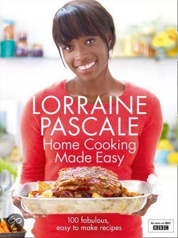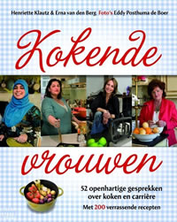
Nu zullen die cijfers in Nederland nog wel meevallen, maar in de loop van de tijd zullen deze trends ook in Nederland effect hebben. Nu al valt mij op dat als ik kijk naar achtstegroepers of brugpiepers, dat de meeste meisjes mascara of nog meer make-up dragen, een bh ’nodig denken te hebben’ en het verschil tussen jongens en meisjes enorm benadrukken.
Een ander voorbeeld van hoe de tijd wordt teruggedraaid naar de jaren ’50, en het stereotype rolpatroon van de vrouw wordt benadrukt, is te zien in de huidige trend (home cooking/slow food, - etcetera) waarbij gezond, vers, biologisch voedsel en bewust leven de belangrijkste onderdelen zijn in een leven dat je gelukkiger, minder afhankelijk van supermarkten en meer zelfvoorzienend maakt. Het genot van het zelf maken en genieten van ‘eerlijk’ eten zou genoeg voldoening moeten geven en je haalt er alles uit voor jou en je mede-eters/je gezin. Trek je vooral middagen lang terug in je keuken en sta je uren uit te sloven voor iets dat in vijftien minuten verorberd is. Het is gezond en je bent goed bezig. Natuurlijk zijn ook mannen hier mee bezig en zien we mannelijke koks op televisie, maar kookboeken spreken vooral vrouwen aan op hun verantwoordelijkheid.
Omdat deze trend begonnen is in Amerika, waar het zich meestal extremer uit, kunnen we er de klok op gelijk zetten (en we zien het nu ook al gebeuren door o.a. Rens Kroes met haar gezonde kookboeken) dat zo’n dergelijke trend, niet alleen op voedselgebied natuurlijk, zich uiteindelijk ook in de rest van de wereld verspreid. De invoeld van de Amerikaanse cultuur is nu eenmaal heel groot.
“I don’t think there is ONE THING MORE IMPORTANT you can do FOR YOUR KIDS THAN HAVE FAMILY DINNER”een quote van Ruth Reichl in het boek “The Family Dinner” van Laurie David. (De kapitalen zijn letterlijk overgenomen van hoe het in het boek staat)
“The single most powerful thing anyone can do to protect their health, to live a healthy life and to have a healthy future is to go into their own kitchen and cook food themselves.”Katie Couric in “The Family Cooks”40
Een onopvallende onderliggende laag die we hier zien is dat vooral de vrouw wordt aangesproken op haar verantwoordelijkheid tegenover het gezin. Je laat je man de barbecue opstoken en zorgen voor echt, puur gegrild vlees en jij… doet de rest.
Hoofdstuk 4
Zeg nou zelf. Als er een vrouw in de krant of een tijdschrift staat, hoe vaak kijk je dan naar hoe ze er uit ziet? En doe je dat ook bij een man? Jeanine Hennis, huidig minister van Defensie, geeft het zelf ook aan in een interview met haar in de Volkskrant41:
“Er worden veel columns geschreven over hoe ik eruitzie, terwijl ik nooit iets heb gelezen over slechtzittende maatpakken van mijn voorgangers. Hou op zeg.”
Een mooie tegenreactie hierop komt van de Australische televisiepresentator Karl Stefanovic, die een jaar lang elke dag hetzelfde pak droeg. Hij kwam tot dit idee doordat zijn vrouwelijke collega wél elke dag seksistische reacties en e-mails kreeg over haar kledingkeuze, maar hij als man niet. Het viel uiteindelijk niemand op, en het punt dat hij heeft gemaakt is aan de ene kant grappig, maar ook ernstig, omdat hij inziet dat het zo apart is dat bij vrouwen het zoveel meer om het uiterlijk gaat.42
"I'm judged on my interviews, my appalling sense of humour – on how I do my job, basically. Whereas women are quite often judged on what they're wearing or how their hair is ... that's [what I wanted to test],”
zegt Karl Stefanovic.
Onderstaande voorbeelden43 geven weer hoe stereotype verslaggeving soms onopvallend te werk gaat:
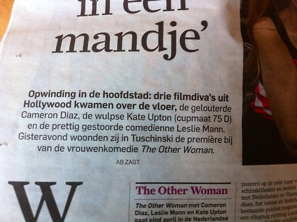Zomaar een bericht over een première van een film. Maar waarom is de cupmaat van een van de hoofdrolspeelsters van belang?
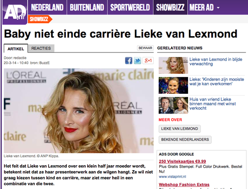Lieke van Lexmond, actrice, is in verwachting. Het AD stelt gelijk de vraag of ze dan gaat stoppen met werken. Wordt deze vraag ooit aan een man gesteld, als zijn vriendin/vrouw zwanger is?
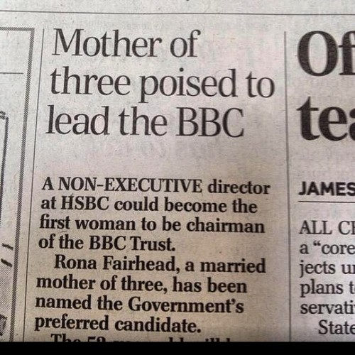Heel belangrijk detail om te weten dat de mogelijk nieuwe directrice van de BBC een getrouwde moeder met drie kinderen is. Wederom: wordt deze vraag ooit aan een man gesteld?
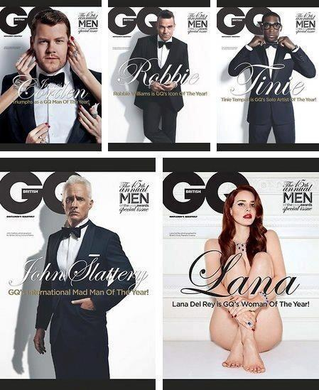Typisch voorbeeld van hoe mannen als het krachtige en machtige geslacht wordt gezien (met linksboven de aandacht van vrouwen als logisch gevolg daarvan) en hoe vrouwen pas de aandacht trekken als ze naakt poseren. Anders verkoopt de cover waarschijnlijk niet. (GQ is een voornamelijk op mannen gericht lifestyle blad)
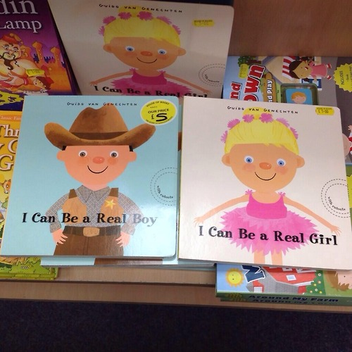
Wat betreft speelgoed wordt kinderen al heel jong duidelijk gemaakt wie ze moeten zijn: als jongen lees je het boekje over stoere cowboys, en als meisje wordt je natuurlijk aangetrokken door de roze, mooie ballerina.
Om te onderzoeken in hoeverre ik in mijn directe omgeving seksistische berichtgeving/representatie kon vinden, heb ik een klein visueel onderzoek gedaan naar reclamefolders. Zo kwam ik onder andere tot de ontdekking dat voor Albert Heijn het heel simpel is: jongens houden van voetbal en meisjes van uiterlijke vertoning door hoge hakken en lippenstift.
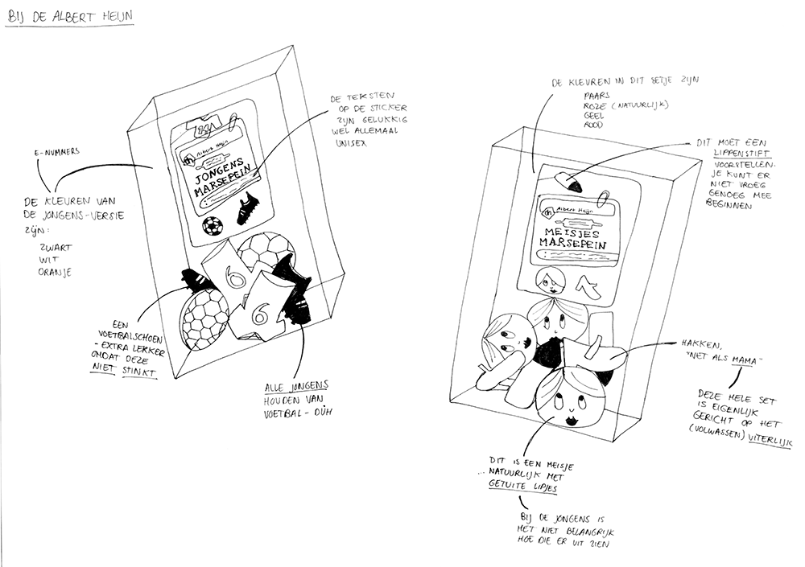 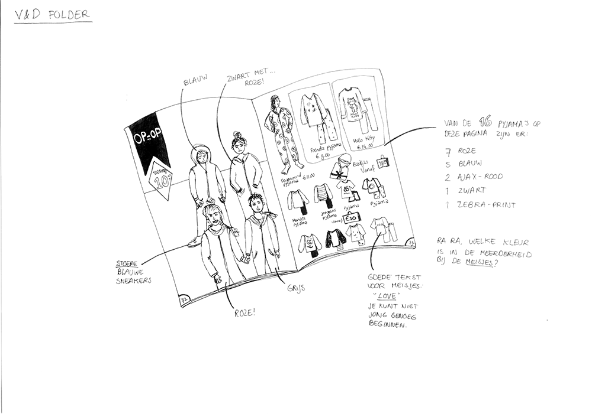 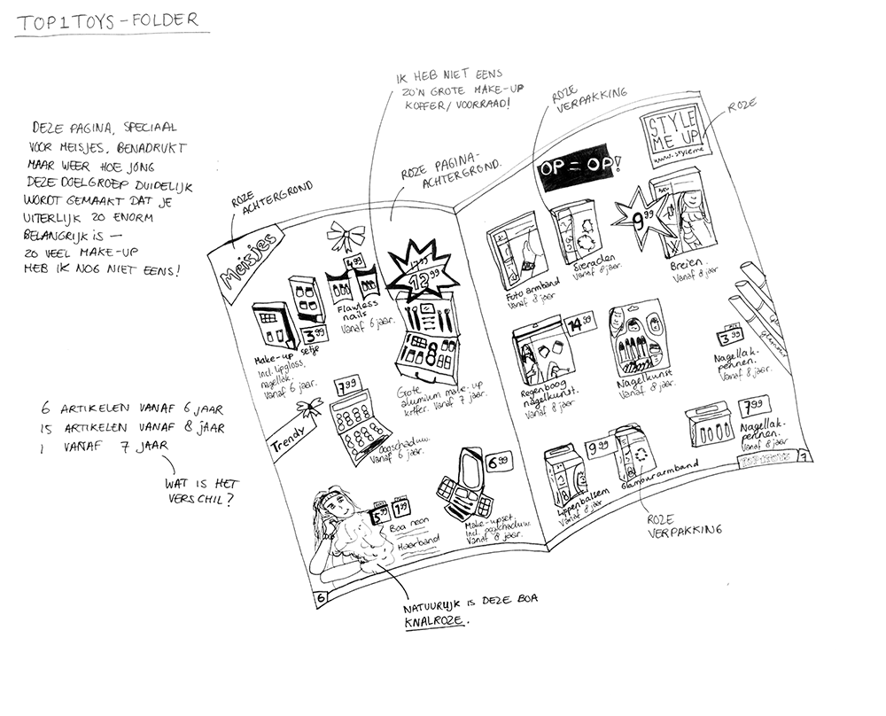 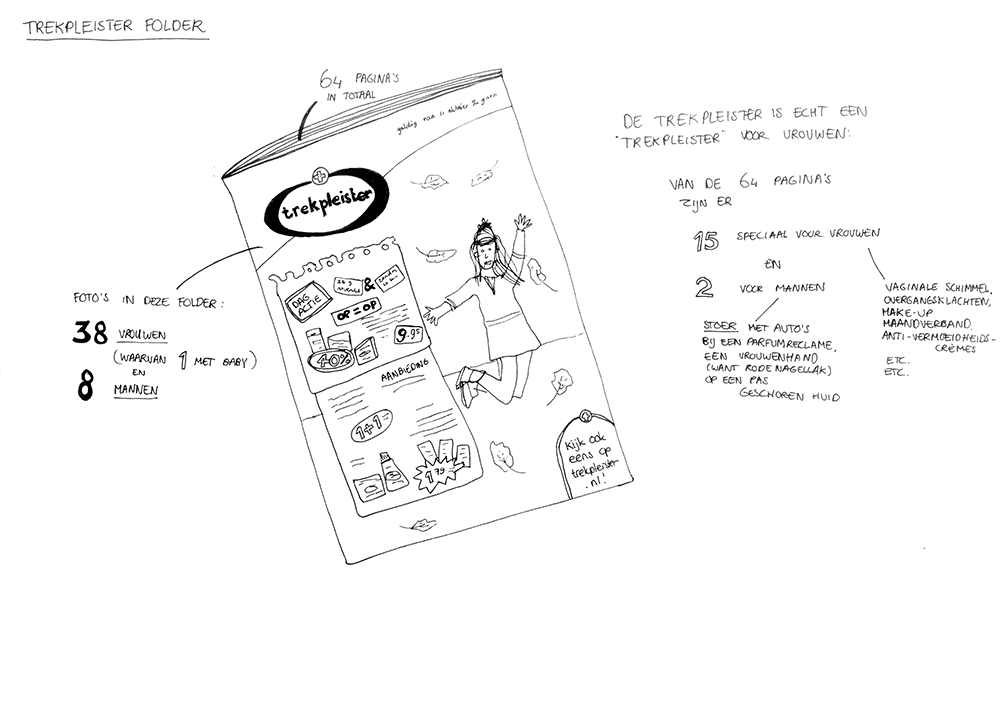 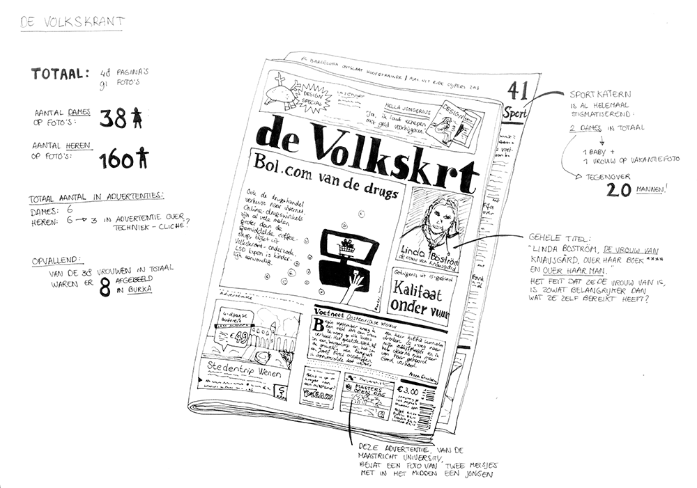Een eenduidig antwoord op de vraag of we gewend zijn aan het seksisme is moeilijk te geven want dat is al een onderzoek op zich, maar het feit dat het in zulke kleine dingen als een introtekst in de krant te vinden is, geeft aan dat het breed verspreid te vinden is. We zien het zo veel en soms zo subtiel om ons heen, dat je het op een gegeven moment niet echt meer door hebt.
Hoofdstuk 5
Mediabedrijven hebben nog nooit zoveel macht gehad en dicteren ons wat we moeten zien en vooral kopen. Ze geven ons “wat het publiek wil”, maar eigenlijk heeft niemand gevraagd om het zoveelste entertainmentprogramma waar ’dikke’ vrouwen worden bekritiseerd en artiesten hun single komen promoten. Vanaf de jaren 90 is het tonen van expliciete seksuele beelden van modellen enorm toegenomen, met als doel de kerndoelgroep van mannen tussen 18 en 34 te bereiken. Die groep is het moeilijkste te bereiken, omdat televisie van nature een vrouwenmedium is ’die toch wel kopen wat ze in de reclame zien’. In het Amerika van de jaren 50 werd dit idee al gebruikt om vrouwen wasmachines, ovens en andere handige huishoudelijke hulpjes te laten kopen (zie afbeeldingen hieronder) om zo het kapitalisme te steunen en het land er na de Tweede Wereldoorlog weer bovenop te helpen. Nu dat is gelukt, moeten mediabedrijven andere manieren vinden om ook de moeilijkere doelgroepen te bereiken.
Door het tonen van halfnaakte, domme (en daardoor grappige) vrouwen die auto’s wassen in bikini’s of reclames waarin vrouwen om een man heen krioelen die een bepaald merk deodorant gebruikt, wordt keer op keer bevestigd dat je als vrouw maar vooral leuk en sexy moet doen om in de smaak te vallen. De vraag is of de adverteerders zèlf niet gewoon mannen van 18 tot 34 zijn, maar dat terzijde.
“We have no obligation to make history. We have no obligation to make art. We have no obligation to make a statement. To make money is our only objective.”
Michael Eisner, voormalig directeur van The Walt Disney Company (op basis van een interne memo).44
De beelden die adverteerders ons opleggen leren vrouwen hoe ze ècht vrouw kunnen worden: met de juiste lippenstift, schoenen en geschoren benen (haren kunnen écht niet!!) ben je pas de echte vrouw die je moet zijn. Je identiteit wordt gecreëerd door hoe jij je toont aan de buitenwereld.
Geloven dat het niet waar is dat televisie geen duidelijke invloed heeft op mensen, is naïef. Meerdere keren is het verband tussen gewelddadige televisie kijken en huiselijk geweld aangetoond 454647 (zie ook hoofdstuk 3, over de cultivation theory) dus is het niet onrealistisch te geloven dat ook met andere vormen van representaties het zo zal zijn. Er is zelfs aangetoond dat het veelvuldig tonen van agressieve en seksueel expliciete muziekvideo’s de acceptatie van verkrachting en seksuele intimidatie bevordert.
In de VS is het zelfs zo dat diverse belangenorganisaties en media-adviesorganen het Congres met klem hebben gevraagd de mediawetgeving te veranderen, maar doordat de politici belangen hebben bij de grote mediabedrijven - ze ontvangen bijvoorbeeld miljoenen steun voor hun campagnes - is er nog niets gedaan hieraan.
In Nederland gaat het gelukkig niet zo ver en heeft de politiek wel degelijk invloed, maar er gaan stemmen op om het amusement van de publieke zenders te laten verdwijnen, omdat dat niet de taak van de onafhankelijke staatsomroepen zou zijn. Ik vind dat we daar mee moeten uitkijken. Voor je het weet kijk je op RTL 5 naar een amusementsprogramma gesponsord door een hip mannenmerk, en vliegen de tieten en andere clichés je om de oren.
We moeten ervoor blijven waken dat we zo veel mogelijk onafhankelijke informatie tot ons krijgen en ik denk niet dat dat gewaarborgd is als we de publieke omroep minder diverse programma’s laten maken en de kijker voor vermaak naar de commerciële zenders moet zappen.
Gelukkig beseft Shula Rijxman, bestuurslid van de NPO, dat een realistische afspiegeling van de samenleving belangrijk is:
“Zolang experts, columnisten en andere sprekers op tv voor het overgrote deel uit mannen bestaan, slagen we er onvoldoende in om Nederland in zijn volledigheid te laten zien.”48
Deel Twee
reflectie
“Het persoonlijke wordt politiek”49
In het proces van het schrijven van deze scriptie en de besprekingen die daarmee gemoeid zijn, met klasgenoten, docenten en vrienden, viel mij steeds op dat zodra ik uitlegde waar ik precies mee bezig was, eigenlijk twee reacties kreeg:
- interesse en begrip van vrouwen
- geknik en verder geen echte verdere reactie van vrouwen èn mannen
Men begrijpt de noodzaak van mijn onderwerp en voelt met me mee, maar het lijkt wel alsof er met het gevoel van begrip en urgentie hierna verder niets wordt gedaan, alsof het diegene zelf niet persoonlijk raakt.
Het stoort me enorm dat zodra ik over mijn onderwerp begin en de urgentie aankaart, ik een beetje meewarig wordt aangekeken. Zodra het woord feminisme of seksisme valt, zie je de helft van de aanwezigen al denken ’daar heb je er weer zo een’, of ook: ’ze is vast zo’n mannenhater’.
De clichés vliegen me om de oren en er worden grappen gemaakt zodra ik mijn punt wil maken. Wat al helemaal vervelend is, is dat het ook van docenten niet de volledige aandacht lijkt te hebben, of dat het probleem alsnog niet wordt erkend. Tijdens een bespreking zei een docent: “Maar dat weten we toch allemaal al?” En daar zit precies het probleem. Natuurlijk weten we dat de media, televisie, reclame, etcetera, ons niet voorschotelt wat de waarheid is en hoe de bevolking er in realiteit uit ziet, maar dat betekent niet dat we dit maar klakkeloos moeten accepteren en onze schouders bij moeten ophalen zodra iemand het onderwerp ter sprake brengt? Het gaat ons toch allemaal aan, en niet alleen een kleine groep duidelijk onderdrukte vrouwen?
‘I decided I was a feminist and this seemed uncomplicated to me. But my recent research has shown me that feminism has become an unpopular word. Apparently I am among the ranks of women whose expressions are seen as too strong, too aggressive, isolating, anti-men and, unattractive. Why is the word such an uncomfortable one?’50
Herhalende patronen als grondslag van maatschappelijke problematiek
De verkeerde representatie van vrouwen in de media kan natuurlijk veel breder getrokken worden; ook donkere mensen, mensen met obesitas, Aziaten, blinden, doven, homo’s, lesbiennes en mensen met een verslaving zijn bijvoorbeeld veelal verkeerd of te weinig te zien in de media. Denk er maar eens over na; zie je wel eens een persoon met overgewicht op een positieve manier op televisie, of is het alleen in afvalprogramma’s of comedy’s waar er om ze wordt gelachen en ze ook de draak met zichzelf steken?
Natuurlijk, in de discussie over Zwarte Piet en de rellen in Ferguson, Amerika, naar aanleiding van het doodschieten van een onschuldige zwarte jongen en het feit dat de blanke agent hier niet voor wordt berecht, is er aandacht voor minderheden en de ongelijkheid in de behandeling hiervan. Zo staat discriminatie en racisme weer volop in de aandacht, en blijkt maar weer hoe kortzichtig en minder tolerant we zijn dan we allemaal pleiten te zijn in Nederland. Maar is het daarbij niet krom om dan maar te negeren dat vrouwen (én mannen natuurlijk) net zo goed steeds gediscrimineerd worden, door weg te worden gezet als object, wat gecommandeerd kan worden of ’toch maar gaat janken’ als er iets is? Ik ga er niet mee akkoord dat de maatschappij en degenen zonder en degenen mét de macht maar opzij blijven kijken.
De problematiek rond Zwarte Piet en de ontbrekende excuses voor de slavernij wat aan de frustratie en protesten vandaag de dag ten grondslag ligt, heeft dezelfde basis als de vrouwenongelijkheid die we tegenwoordig ook nog steeds als maatschappijprobleem kunnen zien. Zoals ik beschreef in hoofdstuk 2 is de ongelijkheid tussen man en vrouw diep geworteld in onze geschiedenis en net als bij discriminatie en racisme al zo lang deel van onze westerse cultuur, dat het aanpakken van dit probleem en het veranderen van de mentaliteit grote maatschappelijke veranderingen vergt. Het feit dat er de laatste jaren openlijk wordt gepraat (geprotesteerd/gevochten tijdens de intocht van Sinterklaas) over de problematiek rond Zwarte Piet, is een voorzichtig begin van veranderingen in denken over ongelijkheid. Het zou mooi zijn als we over een paar jaar als maatschappij toe zijn aan het behandelen van vrouwenongelijkheid, en we eindelijk erkenning krijgen voor het probleem, niet alleen vanuit vrouwenorganisaties maar juist ook vanuit de hoek van de politiek, bedrijfsleven en andere takken waar ’de systemen’ de gelijkheid nog niet volledig mogelijk maken.
White privilege
"I can turn on the television or open to the front page of the paper and see people of my race widely represented.”51
Reden waarom de Zwarte Pieten-discussie zo’n grote groep mensen aanspreekt, is omdat het mes natuurlijk aan twee kanten snijdt; de donkere bevolkingsgroepen in Nederland vinden het te veel een verwijzing naar de slavernij, waar blanken die link niet per se voelen en het bij ’ons feest’ vinden horen. Dit verschijnsel valt goed uit te leggen onder de term ’white privilege’, wat staat voor het maatschappelijke voordeel dat blanken hebben ten opzichte van niet-blanken, die wel leven onder dezelfde sociale, politieke en economische omstandigheden52. Deze dominante, bevoorrechte groep heeft dit niet ’verdiend’, dat wil zeggen, voor gevochten, maar bezit deze voordelen op grond van de waarden van deze groep. Zo valt de Zwarte Pieten-discussie simpelweg eigenlijk niet te begrijpen voor blanken, omdat deze nooit de slavernij vanuit de ogen van de onderdrukte groep hebben meegemaakt. Zo zien de voorstanders van Zwarte Piet de link met slavernij niet meer, omdat het voor hen niet een negatief aspect van hun identiteit is. Dit is natuurlijk heel kort door de bocht uitgelegd. Ik bedoel hier niemand mee te beledigen, maar puur aan te stippen waarom deze discussie erg lastig is, omdat er voor de niet-blanke groep andere belangen (zoals excuses voor het slavernijverleden) spelen die voor de blanke groep niet per se voelbaar zijn.
Het voorbeeld van Zwarte Piet noem ik, omdat het eigenlijk ook zo uit te leggen valt voor vrouwenrechten en -ongelijkheid. Mannen, in de dominante positie in onze maatschappij, kunnen zich niet per inbeelden hoe het is om een achterstand te hebben op grond van je geslacht.
We leven in 2014, en volgens media bestaat werkend Nederland uit blanke mannen van middelbare leeftijd.
Jeroen Pauw geeft zelfs eerlijk toe dat hij geen maatschappelijke verantwoordelijkheid heeft53. Dus… degene die bepaalt wat we zien, zegt dat hij dat eigenlijk niet belangrijk vindt? Gelukkig geeft Giselle van Can, deel van de hoofdredactie van de NOS, wel toe dat hun rol wel degelijk invloed heeft en het verschil kan maken:
“Je bent pas een goede journalist als je verder zoekt en probeert om een realistische afspiegeling van de maatschappij te tonen.”
Dank.
Is het heel raar dat ik me hier druk om maak? Om het feit dat we onverschillig reageren op de toekomst van ons allemaal? Omdat we onbewust altijd al het gevoel hebben gekregen dat we minder zijn en dat we nooit dat plekje aan tafel in praatprogramma’s kunnen krijgen? Dat je als man toch wel voor serieuzer wordt aangezien en je uiterlijk er niet eens voor nodig is om iets te bereiken? Dat je bij een sollicitatiegesprek wordt gevraagd of je al kinderplannen hebt, en hoe snel je daar aan denkt te beginnen?
Wat ik mis is een algemene acceptatie van het probleem en mensen die opstaan en er écht iets aan doen. En dan heb ik het niet alleen over vrouwen, de ’slachtoffers’, die nu meestal al degenen zijn die aandacht vragen hiervoor, maar ook mannen, die in hun huidige dominante positie het verschil kunnen maken.
“Men (…),’ zegt Watson ‘Gender equality is your issue too. I’ve seen my father’s role as a parent being valued less by society despite my needing his presence as a child as much as my mother’s.’54
Conclusie
Dat dit onderwerp mij persoonlijk erg raakt, is duidelijk. Ik heb gelukkig zelf niet per se bewust veel hinder ondervonden van mijn geslacht tot nu toe — in vergelijking tot niet-westerse landen heb je het in Nederland zo slecht nog niet als vrouw — maar het is een feit dat vrouwen wel degelijk nog met andere ogen bekeken worden en zich meer moeten bewijzen om op sommige vlakken mee te komen met mannen.
Dat de representatie van de maatschappij in de media niet correct is, weten de meeste mensen wel, maar dat de invloed van de beelden die we zien zo groot is, is minder bekend en juist daar zie ik een probleem. Door de herhaling van steeds dezelfde stereotype mannen en vrouwen, ontstaan beelden die niet per se de enige versies zijn van deze seksen. Om al helemaal niet te spreken van minderheden als transseksuelen, transgenders, albino’s, doven, zwaarlijvigen, homoseksuelen, lesbiennes en grafisch ontwerpers, die niet of met een verkeerd (stereotype) imago worden gerepresenteerd in de media. Zijn vrouwen dom en alleen interessant als het om hun uiterlijk en moederrol gaat, en zijn alle mannen machtig, sterk en intelligent? Ik zie hier een rol voor mij als grafisch ontwerper weggelegd om aan te kaarten dat we ons hier bewuster van moeten worden en misschien kan ik zelfs een poging doen dit beeld te veranderen. Beelden zijn de tekst van de toekomst dus moeten we zorgen dat deze beelden ook realistisch zijn, in plaats van een droomwereld te creëren die we nergens in het dagelijks leven tegen komen.
You can’t be, what you can’t see.55
Appendix
Boeken:
Butler, J., 2000, Gendertrouble, Amsterdam: Boom/Parrèsia
Ten Broeke, A., 2011, Het idee M/V, Amsterdam: Maven Publishing
Barker, C., 2012, Cultural Studies, Theory and practice, London: Sage Publications Ltd
Artikelen:
Stam, J. “Veldtocht door het mannenimperium”, De Volkskrant, 24 oktober 2014, pagina 16-17
Dekker, W., “Kloof tussen man en vrouw kleiner”, De Volkskrant, 29 oktober 2014, pagina 23
Dohmen, A., “Helaas, alweer alleen grijze pakken”, NRC Handelsblad, 4 september 2014, pagina E6-E7
Reijmer, L., “Koketteren”, De Volkskrant/Sir Edmund, 4 oktober 2014, p. 5
Hoedeman, J, Righton, N., “'Ze houden me wel erg nauwlettend in de gaten’", De Volkskrant 18 oktober 2014, pagina 8-9
Documentaires/televisieprogramma’s:
Miss Representation, Jennifer Siebel Newsom (2011) — ook te zien op Netflix
KRO Brandpunt, zondag 21 september 2014
Websites:
http://www.heavenlycreature.nl/schrijven/columns/boeiende-vrouwen/
http://www.marketingfacts.nl/berichten/mediabesteding-in-nederland-multitasken-neemt-toe/
http://womenscience.wordpress.com/gender-stereotypes/matilda-effect/
http://www.womeninc.nl/nieuwsbericht/vooroordelen-in-de-wetenschap
http://nl.wikipedia.org/wiki/Aletta_Jacobs#Levensloop
http://www.atria.nl/atria/nl/bibliotheek_en_archief/dossiers/_rp_column2_1_id/1_52
http://www.unwomen.org/en/news/stories/2014/9/emma-watson-gender-equality-is-your-issue-too
http://daskapital.nl/2014/02/nederlandse_vrouwen_werken_ste.html
http://www.kennislink.nl/publicaties/seksist-zonder-het-zelf-te-weten
http://powervrouwen.blog.nl/gewelddadig/2014/10/03/geweld-tegen-vrouwen-india-piekt
http://www.vice.com/nl/read/the-rape-in-delhi-thousands-protest-for-womens-safety-in-india
http://en.wikipedia.org/wiki/Cultivation_theory
http://en.wikipedia.org/wiki/Cultivation_theory#Gays.2C_gender.2C_and_sex_on_television
http://www.unwomen.org/en/news/stories/2013/7/geena-davis-institute-research-press-release
http://en.wikipedia.org/wiki/Geena_Davis
http://www.nytimes.com/2014/10/12/magazine/what-if-you-just-hate-making-dinner.html?nytmobile=0&_r=1
http://www.apa.org/research/action/protect.aspx
http://en.wikipedia.org/wiki/Cultivation_theory#cite_ref-Cohen_and_Weimann_1-0
http://basvanstokkom.nl/hetmannelijkego.pdf#page=65
http://www.jannekevanheugten.nl/528/alle-vrouwen-de-beeldbuis-op-vakvrouw-vertel-je-verhaal/!
http://www.canonsociaalwerk.eu/nl_vrh/details.php?cps=4&canon_id=172
http://occupywallstreet.net/story/explaining-white-privilege-broke-white-person
http://www.joop.nl/opinies/detail/artikel/29796_ziek_zwart_en_misselijk/
http://nl.wikipedia.org/wiki/Eerste_feministische_golf
http://nl.wikipedia.org/wiki/Tweede_feministische_golf
http://nl.wikipedia.org/wiki/Vrouwenemancipatie
http://nl.wikipedia.org/wiki/Gender_%28sekse%29
-
Recentere Nederlandse cijfers kon ik helaas niet vinden. ↩
-
http://www.heavenlycreature.nl/schrijven/columns/boeiende-vrouwen/ ↩
-
http://www.marketingfacts.nl/berichten/mediabesteding-in-nederland-multitasken-neemt-toe ↩
-
http://en.wikipedia.org/wiki/Cultivation_theory#Background ↩
-
“On ne naît pas femme on le devient”; uitspraak van Simone de Beauvoir uit haar boek La Deuxième Sexe, geciteerd uit: Butler, J., 2000, Gendertrouble ↩
-
Transgender, transseksualiteit en interseksualiteit zijn andere vormen van seksualiteit waarbij de scheiding man/vrouw niet zo simpel ligt. Ik zal hier verder niet op ingaan. ↩
-
Ten Broeke, A., 2011, Het idee M/V, Amsterdam: Maven Publishing, pag. 15 ↩
-
Stam, J. “Veldtocht door het mannenimperium”, De Volkskrant, 24 oktober 2014, pagina 16-17 ↩
-
Dekker, W., “Kloof tussen man en vrouw kleiner”, De Volkskrant, 29 oktober 2014, p. 23 (misleidende titel, want dit geldt niet wat betreft inkomen en het neemt minder snel af dan in omringende landen)a href="#fnref:9" title="return to article"> ↩
-
http://womenscience.wordpress.com/gender-stereotypes/matilda-effect/ ↩
-
http://www.womeninc.nl/nieuwsbericht/vooroordelen-in-de-wetenschapa href="#fnref:11" title="return to article"> ↩
-
Dohmen, A., “Helaas, alweer alleen grijze pakken”, NRC Handelsblad, 4 september 2014, pagina E6-E7 ↩
-
13 http://www.volkskrant.nl/dossier-europese-unie/vrouwen-in-europese-commissie-pleiten-voor-meer-vrouwen-in-nieuwe-ec~a3687139/?akamaiType=FREE ↩
-
http://www.trouw.nl/tr/nl/4496/Buitenland/article/detail/3798589/2014/11/26/Duitsland-krijgt-vrouwenquotum-voor-topposities-bedrijven.dhtml - overigens ben ik het niet helemaal eens met een vrouwenquotum. Naar mijn mening moeten de mensen met de beste kwalificaties voor een functie de baan krijgen, niet omdat iemand een vrouw, neger, of gehandicapte is. Maar het doorbreekt wel de bestaande manier waarop vaak mannen elkaar (vriendjes) benoemen en er zo geen vrouw tussen komt. Overigens heeft minister Minister Jet Bussemaker van Onderwijs, Cultuur en Wetenschap hier een reactie op gegeven: http://www.trouw.nl/tr/nl/4492/Nederland/article/detail/3799078/2014/11/27/Bussemaker-wars-van-vrouwenquotum.dhtml. Ze is het niet eens met een quotum, maar stelt het wel in als er écht niks verandert in het Nederlandse bedrijfsleven. ↩
-
http://www.evolutie.eu/index.php/Bijbel/adam-en-eva-een-groot-probleem-voor-theistisch-evolutionisten.html ↩
-
http://www.mens-en-cultuur-uitgevers.be/boeken/geschiedenis-en-maatschappij/in-den-beginne-schiep-de-vrouw/ ↩
-
Ten Broeke, A., 2011, Het idee M/V, Amsterdam: Maven Publishing, pagina 208 ↩
-
Meer over Aletta Jacobs op http://nl.wikipedia.org/wiki/Aletta_Jacobs#Levensloop ↩
-
http://www.atria.nl/atria/nl/bibliotheek_en_archief/dossiers/_rp_column2_1_id/1_52 ↩
-
Reijmer, L., “Koketteren”, De Volkskrant/Sir Edmund, 4 oktober 2014, pagina 5 ↩
-
http://www.unwomen.org/en/news/stories/2014/9/emma-watson-gender-equality-is-your-issue-too ↩
-
Ten Broeke, A., 2011, Het idee M/V, Amsterdam: Maven Publishing, pagina 156 ↩
-
Te lezen op http://daskapital.nl/2014/02/nederlandse_vrouwen_werken_ste.html ↩
-
Ten Broeke, A., 2011, Het idee M/V, Amsterdam: Maven Publishing, pagina 158-159 ↩
-
Seksist en racist zijn we stiekem allemaal een beetje, zie http://www.kennislink.nl/publicaties/seksist-zonder-het-zelf-te-weten ↩
-
http://www.unwomen.org/en/news/stories/2014/9/emma-watson-gender-equality-is-your-issue-too ↩
-
http://www.amnesty.nl/nieuwsportaal/nieuws/india-pak-geweld-tegen-vrouwen-aan-maar-zonder-de-doodstraf ↩
-
http://powervrouwen.blog.nl/gewelddadig/2014/10/03/geweld-tegen-vrouwen-india-piekt ↩
-
http://powervrouwen.blog.nl/vagina-onrecht/2013/07/05/vrouwen-op-tahrirplein-trekken-zoveel-mogelijk-kleren-aan-om-aanrandingen-te-bemoeilijken ↩
-
http://www.vice.com/nl/read/the-rape-in-delhi-thousands-protest-for-womens-safety-in-india ↩
-
Te zien op http://brandpunt.kro.nl/seizoenen/2014/afleveringen/21-09-2014\ ↩
-
http://en.wikipedia.org/wiki/Cultivation_theory ↩
-
http://en.wikipedia.org/wiki/Cultivation_theory#Gays.2C_gender.2C_and_sex_on_television ↩
-
Barker, C., 2012, Cultural Studies, Theory and practice, London: Sage Publications Ltd, pagina 317 ↩
-
Barker, C., 2012, Cultural Studies, Theory and practice, London: Sage Publications Ltd, pagina 318 ↩
-
Zoals bijvoorbeeld in samenwerking met de Verenigde Naties in een onderzoek over gender stereotypes en de representatie van vrouwen en meisjes in familiefilms wereldwijd: http://www.unwomen.org/en/news/stories/2013/7/geena-davis-institute-research-press-release Het antwoord op het onderzoek is te vinden op http://www.joop.nl/media/detail/artikel/28726_het_lolitacomplex_vrouwen_in_films_moeten_vooral_lekker_zijn/ ↩
-
http://en.wikipedia.org/wiki/Geena_Davis ↩
-
http://www.joop.nl/media/detail/browse/5/artikel/28726_het_lolitacomplex_vrouwen_in_films_moeten_vooral_lekker_zijn/ ↩
-
NB. Voor een facelift tel je in Amerika even veel geld neer als voor vijf jaar onderwijs aan een openbare universiteit (gezien in Miss Representation, Jennifer Siebel Newsom (2011)) ↩
-
http://www.nytimes.com/2014/10/12/magazine/what-if-you-just-hate-making-dinner.html?nytmobile=0&_r=1 ↩
-
Hoedeman, J, Righton, N., “'Ze houden me wel erg nauwlettend in de gaten’", De Volkskrant 18 oktober 2014, pagina 8-9 ↩
-
http://www.smh.com.au/entertainment/tv-and-radio/karl-stefanovics-sexism-experiment-today-presenter-wears-same-suit-for-a-year-20141115-11ncdz.html ↩
-
van de geweldige website http://seksisme.tumblr.com/ ↩
-
gezien in de documentaire Miss Representation, Jennifer Siebel Newsom (2011) ↩
-
http://en.wikipedia.org/wiki/Cultivation_theory#cite_ref-Cohen_and_Weimann_1-0 ↩
-
http://www.apa.org/research/action/protect.aspx ↩
-
http://basvanstokkom.nl/hetmannelijkego.pdf#page=65 (onder ’effecten van mediageweld’) ↩
-
http://www.jannekevanheugten.nl/528/alle-vrouwen-de-beeldbuis-op-vakvrouw-vertel-je-verhaal/ ↩
-
Dit is de titel van een boek van Irene Costera Meijer. www.canonsociaalwerk.eu/nl_vrh/details.php?cps=4&canon_id=172 ↩
-
http://www.unwomen.org/en/news/stories/2014/9/emma-watson-gender-equality-is-your-issue-too ↩
-
http://occupywallstreet.net/story/explaining-white-privilege-broke-white-person ↩
-
http://www.joop.nl/opinies/detail/artikel/29796_ziek_zwart_en_misselijk/ ↩
-
http://www.jannekevanheugten.nl/528/alle-vrouwen-de-beeldbuis-op-vakvrouw-vertel-je-verhaal/ ↩
-
http://www.unwomen.org/en/news/stories/2014/9/emma-watson-gender-equality-is-your-issue-too ↩
-
http://www.jannekevanheugten.nl/528/alle-vrouwen-de-beeldbuis-op-vakvrouw-vertel-je-verhaal/ ↩